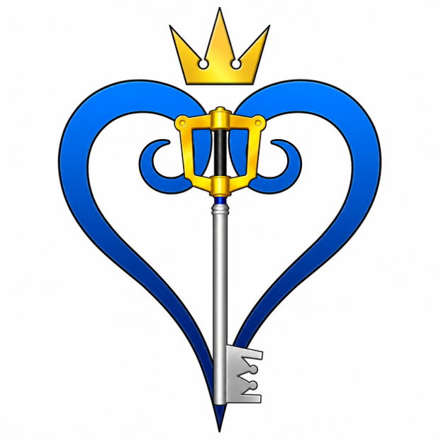

What can the
Keyblade do?

Despite its appearance, the Keyblade is much more than a weapon. It possesses a wide variety of magical abilities that allow it to interact with hearts, worlds, and powerful sources of magic. From sealing worlds to casting spells and transforming into new forms, the Keyblade's versatility makes it one of the most powerful artifacts in the Kingdom Hearts universe.
Lock and Unlock

One of the Keyblade's defining powers is its ability to lock and unlock things that ordinary keys cannot. It can seal the Keyholes of worlds to protect them from darkness, unlock magical barriers, open hidden pathways, and even interact with hearts themselves.
Hearts

The Keyblade shares a unique connection with hearts, which are central to the story of Kingdom Hearts. It can free captured hearts from defeated Heartless, protect hearts from corruption, and interact with them in ways that ordinary weapons cannot. This special relationship explains why the Keyblade is so important in the struggle against darkness and why it is often the only weapon capable of accomplishing certain tasks.
Magic

Every Keyblade serves as a powerful conduit for magic. Wielders can cast elemental spells such as Fire, Blizzard, Thunder, Aero, Water, and Cure, along with many other forms of supportive and offensive magic. Different Keyblades may enhance certain magical abilities, allowing wielders to adapt their fighting style while combining physical attacks with powerful spells.
Formchanges

Keyblades can transform into different forms, giving wielders new abilities and combat styles. These transformations allow the Keyblade to adapt to different situations and unlock powerful attacks.